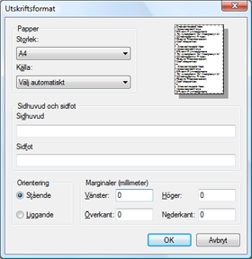

Ladda ner Masserr Klient Application
Installations Instruktioner
Masserr behöver Java Runtime 1.5 (a.k. 5.0) installerad på din dator för att kunna köra, 1.6 (a.k. 6.0) har också testats fast inte fullt ut, och verkar funka.
Java laddar du ner ifrån länken nedanför, Javas installationsfil ligger på ca 45 MB så en modemuppkoppling är inte att rekomendera.
När Java är installerat så packar du upp masserr.zip till valfri katalog på din dator,
för PC t.ex. "C:\Program\masserr".
Katalogen du packade upp till innehåller nu bl.a. tre stycken ".bat"
masserr.bat, admin.bat och eventuellt server.bat och serversetup.bat.
masserr.bat Startar den normala klienten för Roller, Influenser o.s.v.
admin.bat Startar Administratör klienten, man behöver ha Administratörs rättigheter för att köra den.
Admin-klienten används för att lägga till nya användare, ge dem rättigheter och lägga till & ändra Domäner.
server.bat Startar en masserr server i ett DOS fönster, för detta behövs en databas fil, var den finns ställer man in genom att köra serversetup.bat.
Installera typsnitt
I katalogewn som du packade upp masserr i så finns en katalog vid namn install. Däri ligger tre stycken typsnitt
(WOD_____.TTF, WOD2_____.TTF och WOD3_____.TTF) detta gör du genom att kopiera dessa filer
till Kontrollpanelen/Typsnitt i Windows, dessa behöver du även ha installerat för att WebMasserr skall visa korrekt klan-symboler när du surfar där.
När du startar masserr.bat så ska du se till att arbets-katalogen är densamma som där masserr.bat
ligger placerad, om du t.ex. startar genom att i Windows dubbel-klicka
på filen i katalogen som den ligger så är arbetskatalogen rätt, men om
du skapar en genväg på t.ex. skrivbordet, så behöver du se till att
genvägens arbets-katalog är satt rätt. Annars så kommer inte ikoner och
klansymboler att laddas, samt andra skumma problem som inte är fullt
testade ännu.
Första gången du kör Masserr
Första gången en Användare på datorn kör masserr.bat eller admin.bat,
så kommer systemet märka att det inte finns några inställningar, det
första den märker av är troligtvis att Temp-katalogen inte är satt och
meddela detta, efter meddelandet så dyker Preferences-dialogen upp, där
du ska fylla in de uppgifter om din Dator som behövs för att köra
Masserr, se bilden nedan.

Följande Fält kan/ska fyllas i
- Database File
- Om du har en lokal databas-fil och vill använda den istället för att
koppla upp dig på servern så fyller du i var databasen finns i detta
fältet, du kan använda ..-knappen för att browsa dig fram till filen.
Du kan endast fylla i detta fältet om Go Online är avkryssat.
- Heading - Här fyller du i vad som skall stå som Överskrift på karaktärsbladen.
- Temp Directory - Fyll i var temporära filer skall sparas vanligtvis på Windows masiner används
C:\Windows\Temp de temporära filerna tas bort när Applikationen stängs av.
Du kan använda dig av ..-knappen för att browsa dig fram till den katalog du vill använda.
- Html Browser
- Alla dokument såsom Karaktärs-blad o.s.v. är i HTML format, så
Masserr behöver veta var din Web-läsare finns så att Masser kan starta
den för att visa dokumenten. Masserr är endast testad med Microsoft
Internet Explorer 6.0 och är därför rekomenderad att använda. På
standard Svenska Windows-maskiner hittar du Internet Explorer på
C:\Program\Internet Explorer\IEXPLORE.EXE. Du kan använda dig av
..-knappen för att browsa dig dit.
- Show XP from
- Efterssom Masses stödjer att man lägger XP till Roller eller till
Spelare så behöver systemet veta varifrån den ska hämta XP-infon ifrån
(Roller eller Spelare) när den ska visas på t.ex. Karaktärsbladet.
Carlshamn By Night och WebMasserr är inställt på Player, så det
rekomenderas att köra samma om ni använder bådeoch.
- Go Online
- Ska systemet hämta data från servern via nätet eller ska den hämta
från en lokal kopia av databasen.
- Server HostName - Adressen till servern så att systemet vet vart servern är, antingen skriver du i
blodseden.gotdns.com eller så skriver du serverns lite mer pålitliga address:
cern.dyndns.org
Skriva ut karaktärsblad
Om du vill skriva ut karaktärsblad från systemet så behöver du ställa
om marginalerna i Internet Explorers Utskriftsformat. Ta bort alla
marginaler, och för att det ska se snyggare ut så kan du även ta bord
sidhuvud och sidfot. Detta behöver du även göra för att det ska fungera
att skriva ut karaktärsblad i WebMasserr.

Ladda ner
Java Download Page Välj 32-bit/64-bit for Windows/Linux/Solaris SPARC
32-bit for Solaris x86 -> JRE